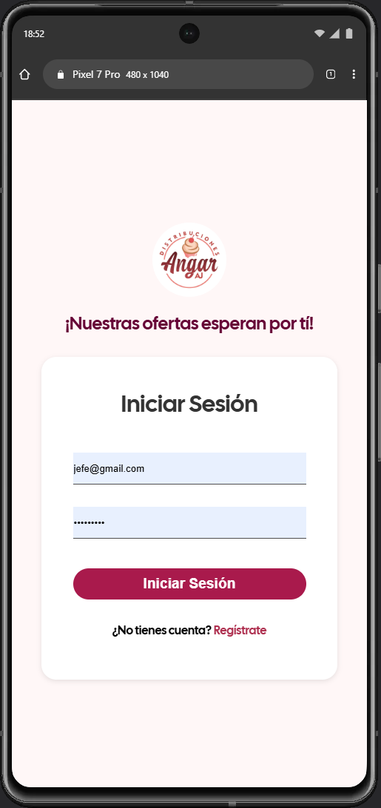
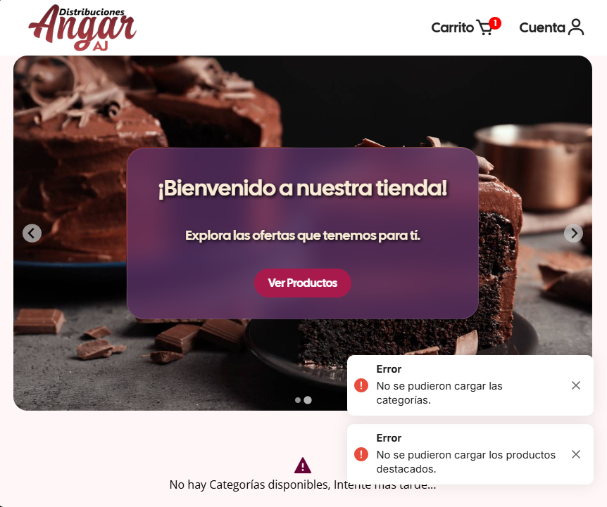

Angar AJ E-Commerce
Sitio Web de venta y administración de productos hecha con el framework Flask, PostgreSQL. Cuenta con Roles de Usuario, Generación de Reportes personalizables (ordenar por fecha, precio, alfabeto, etc) en formato PDF, Administración de Categorias, Productos, Cuentas y Ventas, además de filtrado de tablas para encontrar elementos fácilmente.
Fue Realizada por los siguientes Técnicos Superiores en Informática:
- Francisco Skopal (FRANPAL)
- Keiver Calderón (Kiba)
EQUIPO
Responsividad
En Franpal Dev (colaboración con KIBA) sabemos que la experiencia de usuario debe ser excelente sin importar desde qué dispositivo visite el sitio web, es por esto que nos enfocamos en ofrecer un diseño totalmente responsivo.
Modos
Existen 2 Modos principales (cliente y administrador). Cabe destacar que la app cuenta con múltiples validaciones, comprobaciones de seguridad y un efectivo sistema de notificaciones que mantiene al usuario informado en todo momento

Click en cualquier area para cerrar
Click en cualquier area para cerrar